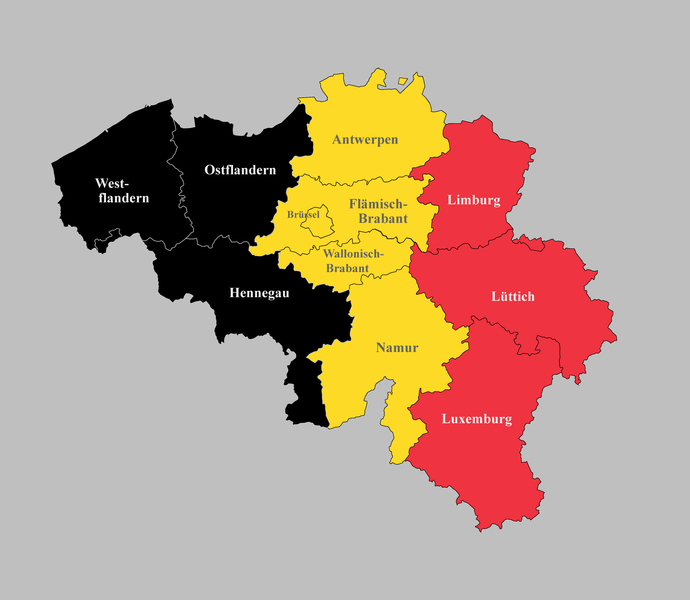

Belgien ist ein kleines, aber vielfältiges Land in Westeuropa und ist in drei Regionen unterteilt: Flandern, Wallonien und die Region Brüssel-Hauptstadt. Flandern im Norden ist bekannt für seine flachen Landschaften, historischen Städte wie Brügge und Antwerpen sowie für seine kulinarischen Spezialitäten wie Waffeln und Bier. Wallonien im Süden ist bekannt für seine Hügellandschaften und die Ardennen, die sich über Belgien, Frankreich und Luxemburg erstrecken. Hier kann man Wandern, Radfahren und Skifahren. Die Region Brüssel-Hauptstadt ist das politische und kulturelle Zentrum Belgiens und beherbergt die Europäische Union sowie viele historische Sehenswürdigkeiten und Museen. Jede Region hat ihre eigene Identität und Geschichte, was Belgien zu einem faszinierenden und abwechslungsreichen Reiseziel macht.

^ Die Bundesländer Belgiens ^